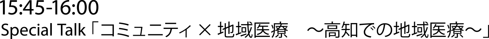

瀬尾 拡史 （せお ひろふみ）
株式会社サイアメント代表取締役、医師／サイエンス CG クリエーター
東京大学大学院医学系研究科生体物理医学専攻博士課程 3 年
「サイエンスを、正しく、楽しく。」を合い言葉に、サイエンスコンテンツの制作を行う。
東京大学大学院医学系研究科生体物理医学専攻博士課程 3 年
「サイエンスを、正しく、楽しく。」を合い言葉に、サイエンスコンテンツの制作を行う。

猪子 寿之 （いのこ としゆき）
チームラボ代表
最新テクノロジーを駆使した
マルチアーティスト集団「チームラボ」を率いる。
最新テクノロジーを駆使した
マルチアーティスト集団「チームラボ」を率いる。
奥田 晃子 （おくだ あきこ）
佐賀大学医学部医学科6年／ViVi専属読者モデル ViVigirl
病院空間をアートで変えるため、
弟とともに「病院星空プロジェクト」等の活動を続ける。
病院空間をアートで変えるため、
弟とともに「病院星空プロジェクト」等の活動を続ける。
奥田 一貴 （おくだ かずたか）
九州大学医学部医学科２年
渡米・病院経営塾での経験から経営にも興味を持ち、
姉とともに「病院星空プロジェクト」を行う。
渡米・病院経営塾での経験から経営にも興味を持ち、
姉とともに「病院星空プロジェクト」を行う。

武部 貴則 （たけべ たかのり）
横浜市立大学大学院医学系研究科臓器再生医学准教授／スタンフォード大学幹細胞生物学研究所客員准教授
再生医療の分野で世界的に注目されている若手研究者。
先端医療のみならず、広告医学により患者目線からもアプローチ。
再生医療の分野で世界的に注目されている若手研究者。
先端医療のみならず、広告医学により患者目線からもアプローチ。
梅田 悟司 （うめだ さとし）
株式会社電通 コピーライター、クリエーティブ・ディレクター
カンヌ広告賞、レッドドット賞、グッドデザイン賞など国内外30以上の賞を受ける。
ビデオリサーチ社が選ぶ2014年コピーライターランキングトップ10選出。
カンヌ広告賞、レッドドット賞、グッドデザイン賞など国内外30以上の賞を受ける。
ビデオリサーチ社が選ぶ2014年コピーライターランキングトップ10選出。

石井 洋介 （いしい ようすけ）
医師、Ryoma base共同代表、日本うんこ学会会長
地域医療や大腸癌検診PR活動に従事。
医療をもっと面白く、医療情報の非対称性解消に挑戦中。
地域医療や大腸癌検診PR活動に従事。
医療をもっと面白く、医療情報の非対称性解消に挑戦中。
山本ゼミへの参加をご希望の方は、上記リンク先よりお申し込みください。
渋谷 健司 （しぶや けんじ）
東大大学院医学系研究科国際保健政策学教授、一般社団法人JIGH代表理事
グローバルヘルス、医療改革の最前線に立つ。
20年後の医療を見据えた政策ビジョン『保険医療2035』策定懇親会の座長を務める。
グローバルヘルス、医療改革の最前線に立つ。
20年後の医療を見据えた政策ビジョン『保険医療2035』策定懇親会の座長を務める。
江崎 禎英 （えさき よしひで）
経済産業省 商務情報政策局 ヘルスケア産業課長、合気道師範
誰もが不可能と思っていた制度改革に次々と挑戦。
「幸せのかたち」を追及するスーパー官僚。
誰もが不可能と思っていた制度改革に次々と挑戦。
「幸せのかたち」を追及するスーパー官僚。
山本 雄士 （やまもと ゆうじ）
東大医、Harvard Business School卒業。
データ活用やサービス開発で医療・ヘルスケア業界の最適化をし、
安く長い健康を実現する㈱ミナケアを創業。
政策提言や講演・教育活動も行っている。
データ活用やサービス開発で医療・ヘルスケア業界の最適化をし、
安く長い健康を実現する㈱ミナケアを創業。
政策提言や講演・教育活動も行っている。